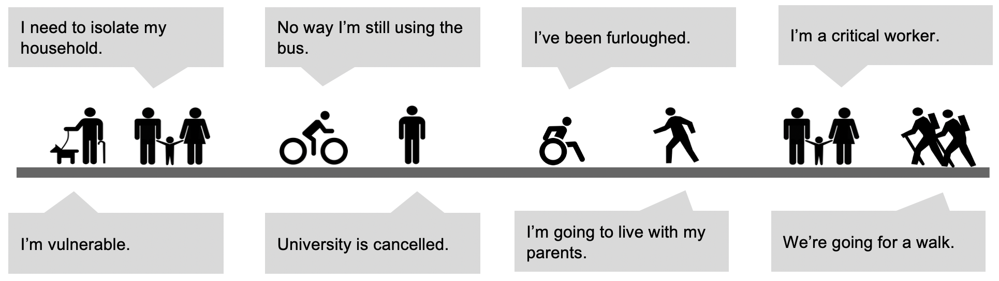
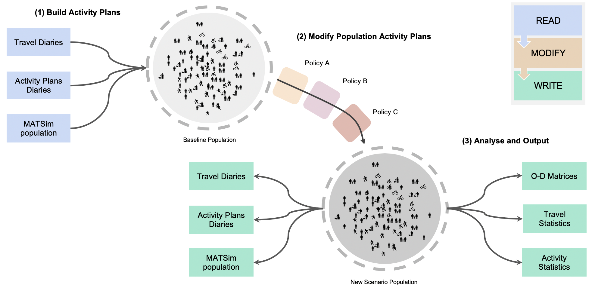

Home
PAM is a python API for activity sequence modelling. Primary features:
- common format read/write including MATSim xml
- sequence inference from travel diary data
- rules based sequence modification
- sequence visualisation
- facility sampling
- research extensions
PAM was originally called the "Pandemic Activity Modifier". It was built in response to COVID-19, to better and more quickly update models for behaviour changes from lockdown policies than existing aggregate models.

Who is this for? PAM is intended for use by any modeller or planner using trip diary data or activity plans. What can this do? PAM provides an API and examples for modifying activity plans, for example, based on COVID-19 lockdown scenarios.
Features#
This project is not a new activity model. Instead it to seeks to adjust existing activity representations, already derived from exiting models or survey data:

(i) Read/Load input data (eg travel diary) to household and person Activity Plans.
(ii) Modify the Activity Plans for new social and government policy scenarios (eg remove education activities for non key worker households). Crucially PAM facilitates application of detailed policies at the person and household level, while still respecting the logic of arbitrarily complex activity chains.
(iii) Output to useful formats for activity based models or regular transport models. Facilitate preliminary Analysis and Validation of changes.
This work is primarily intended for transport modellers, to make quick transport demand scenarios. But it may also be useful for other activity based demand modelling such as for goods supply or utility demand.
Why Activity Plans?#

-
They are the ideal mechanism for applying changes, allowing for example, consideration of joint dis-aggregate features across an entire day.
-
They can be post processed for many other output formats such as origin-destination matrices or activity diaries. These outputs can the be used in many different applications such as transport, utility demand, social impact and so on.